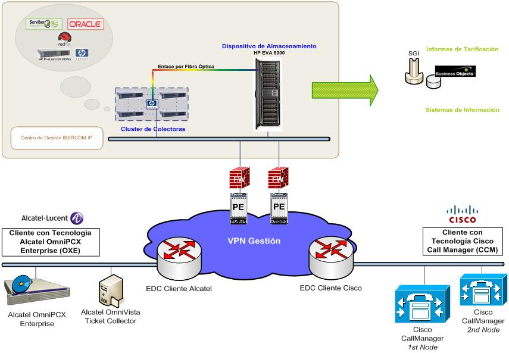
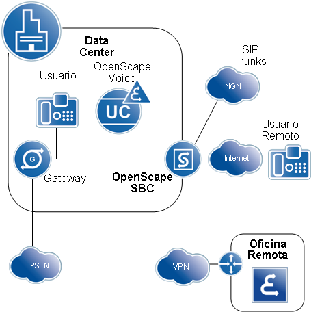
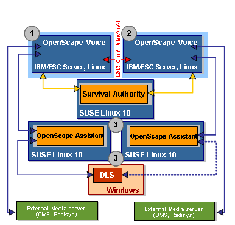

Servicio Ibercom IP¶
Descripción del servicio¶
Bajo la denominación de servicio Ibercom IP se engloban aquellas plataformas que ofrecen una solución de telefonía sobre IP, válida para redes corporativas de múltiples dependencias de cualquier tamaño; interconectadas a través de la red IP de datos del Cliente y contando con el entorno de supervisión y mantenimiento del servicio Ibercom Master.
Las plataformas elegidas son:
Cisco Call Manager
Alcatel OmniPCX Enterprise
Mitel MX-ONE
Unify
Mediante el servicio Ibercom IP, se proporciona al cliente la instalación y puesta en servicio de los elementos propios de la solución de telefonía:
Servidores para la gestión de llamadas
Terminales digitales/IP
Servidores de productos de valor añadido
Circuitos de interconexión/acceso a NGN
Provisión de numeración
Asistencia postventa
Nota
El cliente, debe contratar el servicio de RPV convergentes (MacroLAN, VPN-IP) para el transporte de la telefonía IP.
La conexión a redes públicas, se puede realizar a través de NGN (APV/AUIP), donde la numeración pública, será la que corresponda en función del distrito de tarificación al que pertenece la dependencia donde están las extensiones
En el ambito local de cada dependencia, es necesario, crear VLAN diferentes, para terminales del servicio de voz, servicio de datos, gateways, servidores de llamadas y servicios de valor añadido
Arquitectura común del servicio: APV y AUIP¶
El cliente precisa de una conexión externa, a través de esta interfaz, el cliente enviará/recibirá cualquier llamada desde redes fijas/móviles distintas a su red corporativa.
Ibercom IP a la red NGN, se define en dos puntos de acceso a la red NGN, donde se proporcionará 10 ó 30 comunicaciones simultáneas.
La red NGN, soporta el protocolo SIP.
El servicio de Accesos Primarios Virtuales, pretende ser una alternativa al servicio de Accesos Primarios
Cisco Call Manager¶
Para la solución Cisco Unified Communications Manager, existen los siguientes productos
Gestor de llamadas
Terminales IP
Gateways para la conexión de terminales analógicos y terminales de fax
Mensajeria vocal (Unity Connection)
Mensajería instantánea y presencia (CUCM IM y Presence)
Call Center (UCCX, IPCC Express)
Tarificación (cHar)
Solución de conferencia (Cisco Webex Meetings Server)
Telefonía DECT (Ascom)
Trabajador remoto (ExpressWay)
Elementos funcionales¶
Gestor de llamadas. Cluster de servidores Communications Manager, proporciona la inteligencia centralizada pa ra la gestión de admisión y enrutamiento de las llamadas, así como la gestión de recursos. Dispone de dos servidores en su configuración mínima y hasta 20 en la máxima, soporta un máximo de 30000 terminales IP y entre 500 y 2000 dependencias remotas (locations). Los servidores pueden estar ubicados en la misma dependencia o distribuirse por varias dependencias a fin de conseguir una mejor organización a nivel geográfico o lógico
Servidores PVA. Proporciona el servicio para todas las oficinas remotas
Terminales. Teléfonos IP de sobremesa, softphone (Jabber, Cisco Communicator), operadora sobre PC y terminales WiFi
Adaptador. Para conexión de múltipes terminales analógicos a la LAN, de 2 y 24 puertos
Gateway. Destinado a la conexión con redes públicas. Estos equipos, podrán llevar recursos de DSP adicionales para multiconferencia. En dependencias remotas, puede disponer de supervivenia remota, que permitirá actuar como PBX autónoma cuando se pierde la comunicación con el servidor de llamadas
EDC de acceso a la WAN. EDC de acceso a la RPV
Conexionado¶
Todo el equipamiento que forma parte de la solución de voz, debe tener conectividad entre sí. El elemento principal de la arquitectura, el servidor de llamadas, debe tener conectividad IP con todos los terminales IP y Media Gateways, estén en propia dependencia o en dependencias remotas, incluso los servidores que soportan servicios de valor añadido.
Existen una serie de requisitos que se deben cumplir en la red, en cuanto a retardo y ancho de banda para que sea posible la distribución geográfica de los servidores, lo que hace que no cualquier infraestructura de red, sea válida para soportar la distribución de servidores
Servicio de RPV convergentes (MacroLAN, VPN-IP), a parte de los datos, se transporta la voz y la señalización elacionada con la telefonía.
La señalización de gestión necesaria para la supervisión y gestión remota de los elementos que forman parte del servicio ibercom, es entregada por el EDC de acceso a la red, de cada dependencia, a la red de gestión del servicio de red y encaminada a través de esta RPV al centro de gestión y supervisión remota.
Hosteada Cisco HCS¶
Consta de un entorno de màquinas virtuales, donde se alojan los servidores para las comunicaciones unificadas de cada cliente, sistema independiente de almacenamiento en arquitectura SAN, interfaz hacia el SBC para comunicaciones externas y herramientas de gestión centralizadas, tanto para el entorno de virtualización, como para provisión y operación y mantenimiento
Cisco Hosted Collaboration Solutions (HCS), es el producto de Cisco para el despliegue de comunicaciones unificadas de manera vistualizada
Proporciona n capa de gestión unificada
Solución desplegada en infraestructura de centros de servicios, donde se instancian las PBXs de clientes
PBX, conecta a NGN para salida a red fija y móvil
Las aplicaciones HCS, se pueden dividir en dos categorías
Aplicaciones para el servicio de comunicaciones unificadas
Aplicaciones para gestión de la plataforma
HCS consta de los elementos siguientes:
_ Aplicaciones de comunicaciones unificadas (CUCM, IM&P, CUC Unity) - Virtualización con Vmware v5.5 - Switching virtual Nexus 1000 - Hardware de procesamiento, Blades B200 M3 - Almacenamiento centralizado. SAN - Switching de interconexión
Caracteristicas de la redundancia geográfica¶
Se despliegan las máquiinas de cliente, responsables de la voz, en dos centrales separadas geográficamente, para dotar al sistema de redundancia
Las aplicaciones de voz, se despliegan en arquitecturas activo-activo, realizando un reparto equitativo de las líneas de cliente en ambos nodos
Ante la caida de un nodo que da servicio, el nodo redundante, tomaría el control de todos los usuarios
El dimensionado de las máquinas virtuales, se hace del mismo modo que para una solución on-premise
Solo es necesario comunicación a nivel IP entre las máquinas de cliente de los CDS
Cuando los teléfonos se registran, se les indica cual es su nodo primario y cual el secundario. Normalmente, la mitad de terminales, tendrá como nodo primario, uno de los centros y la otra mitas tendrá como nodo primario, el otro centro. De esta forma, se mantienen siempre activos ambos nodos, garantizando la entrada en ejecución del nodo de respaldo ante la caida del primario.
Ante la caida del nodo primario, las llamadas, no se ven afectadas, ya que una vez establecidas, no utilizan recursos del nodo

Alcatel Lucent - OXE¶
Elementos de la solución de Alcatel¶
Servidor de llamadas OXE
Servidores de valor añadido
OmniTouch, una aplicación Linux para comunicaciones unificadas
Omnivista, equipo sobre Windows, que permite la gestión remota y centralizada de todas las OXE conectadas con él
Conexionado¶
Todos estos equipos, deberán tener conectividad desde el sistema de gestión
EDC de datos de primer nivel
Servidor de comunicaciones
Switch
Los media gateways de Alcatel, permiten el desbordamiento de llamadas por la red conmutada, no son equipos gestionables y por lo tanto, no necesitan tener direccioamiento de gestión.
Elementos de la arquitectura del sistema de gestión
Componentes que se despliegan en el hosteado
Servidor de licencias, uno por cliente
Desplegar Omnivista, un servidor por cliente
Una o varias OXE
Desplegar OMS (gateways virtuales) uno o varios
Opentouch, comunicacione sunificadas
Hipath 8000¶
Elementos funcionales de la solución H8K-OSV¶
Los elementos que integran esta solución de telefonía IP son:
Gestor de llamadas (OpenScape Voice) y opciones de redundancia
Gateway en sede central
Gateway en sede remota (supervivencia)
Telefónos IP
Adaptadores ATA y otros terminales
OpenScape Xpressions
La arquitectura distribuida, se puede analizar por áreas
Sede central
Sede remota con salida RTC
Sede remota con terminales IP
En la sede central, es donde reside el gestor de llamadas en sus posibles arquitecturas
Simplex
Duplex en un datacenter (alta disponibilidad)
Duplex en dos datacenters (alta disponibilidad con redundancia geográfica)
Conexionado¶
En la arquitectura simplex, el gestor de llamadas y todas sus aplicaciones, residen en un solo servidor, ubicado en el data center
Dentro de la arquitectura Simplex está la versión OpenScape Voice Entry que es una versión integrada en un solo servidor que NO puede evolucionar a simplex, su alcance es de 800 usuarios de voz y con la aplicación de comunicaciones unificadas soporta 40 usuarios de UC y 240 de voz solo. Incorpora un SBC y está basado actualmente en el servidor IBM x3250 M3.
La arquitectura duplex, proporciona alta disponibilidad para el gestor de llamadas y distintas opciones de ubicación y redundancia para las aplicaciones. Se redunda el gestor de llamadas OpenScape Voice, el resto de aplicaciones, se instalan fuera de ambis sistemas y pueden redundarse, según las necesidades del cliente

En un escenario duplex en dos data center, la alta disponibilidad, es que los gestores de llamadas, se separan físicamente en dos data center. Para coordinar la caída y recuperación de los nodos, se utiliza un sofware denominado Survivable Authority que se instala en ua tercera ubicación
Sedes remotas¶
Las sedes remotas con necesidades de salida local, se equipan con dispositivos gateway
Sede con salida RTC, gateway OpenScape Branch
Sede con salida RTC y supervivencia, utilizan equipos con proxy-SIP + gateway integrado
El equipo en sede remota con supervivencia, incorpora funcionalidades básicas de telefonía cuando se pierde conectividad con el gestor de llamadas. Al tener funcionalidades de gateway, también posibilita a los usuarios hacer y recibir llamadas a RTC